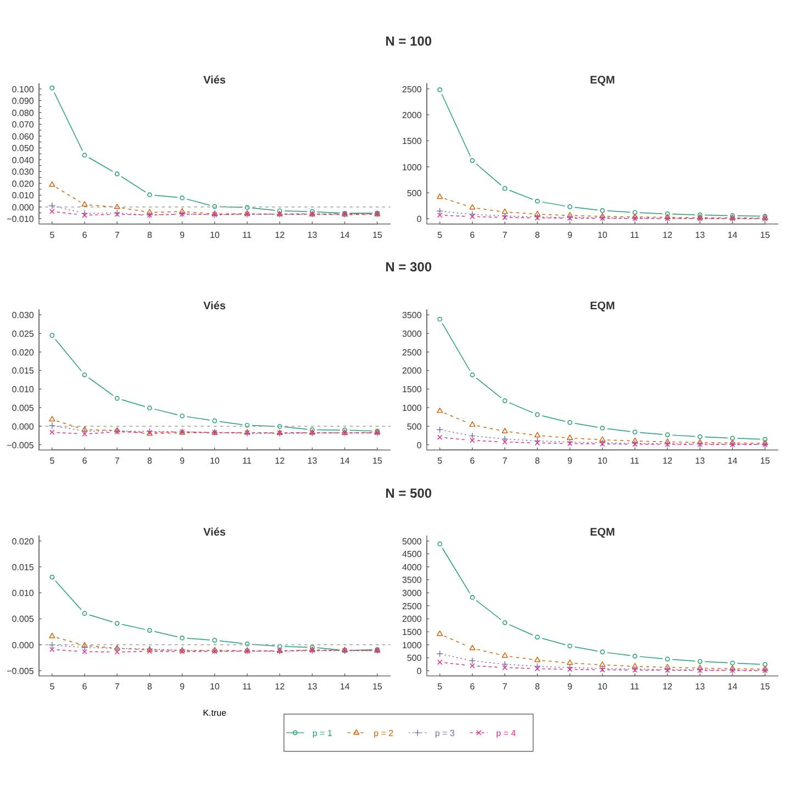
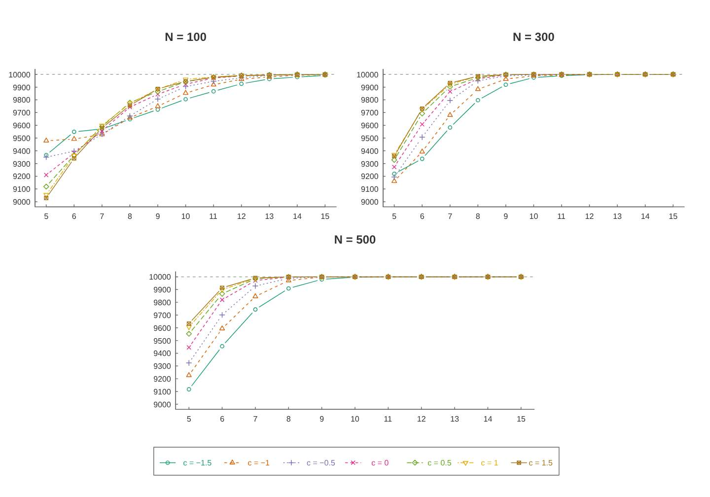
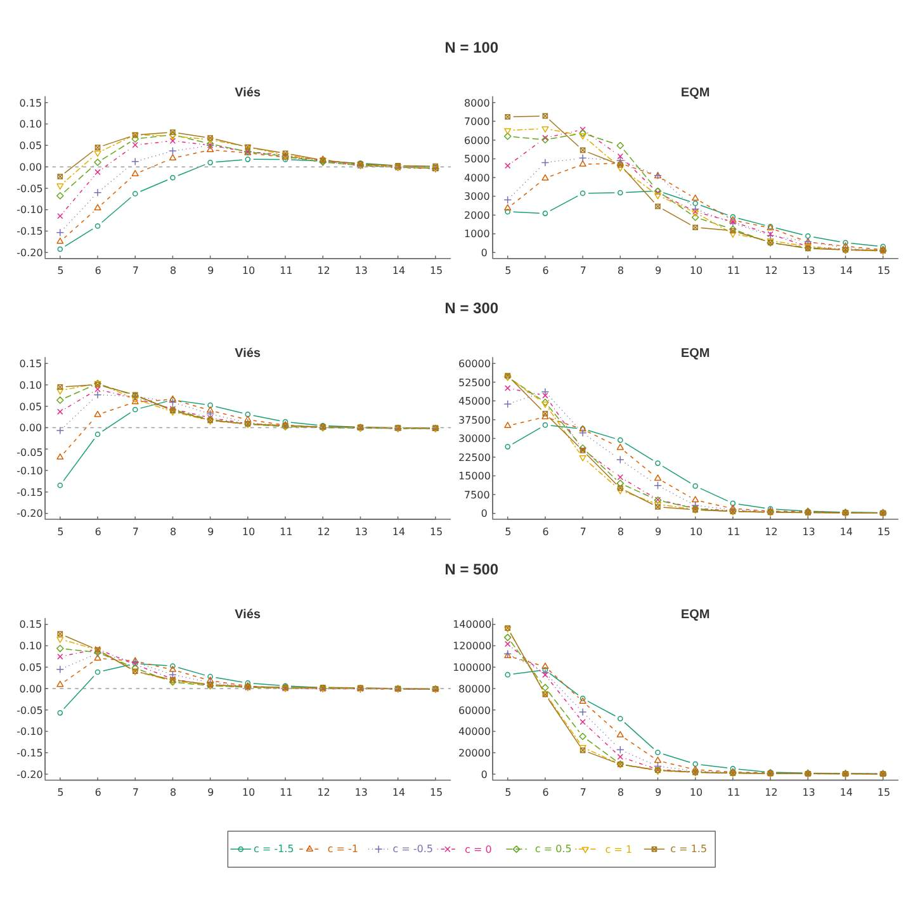
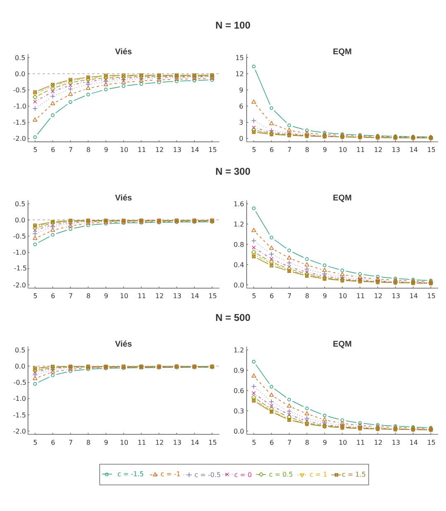

4 Resultados e Discussão
Neste capítulo apresentaremos resultados numéricos para a metodologia estudada. Dividimos o capítulo em duas partes: na primeira parte, ilustraremos a metodologia em duas aplicações com dados reais de captura-recaptura; e na segunda parte realizaremos um estudo de simulação Monte Carlo para verificar o comportamento dos estimadores de máxima verossimilhança – com foco no estimador do parâmetro \(N\) – dos dois modelos apresentados, \(M_t\) e \(M_{tb}\).
4.1 Aplicação com dados reais
Nesta seção vamos aplicar os dois modelos de captura-recaptura estudados, \(M_t\) e \(M_{tb}\), em dois conjuntos de dados reais da literatura. Para fins comparativos, iremos escolher como melhor ajuste aos dados o modelo que apresentar os menores valores dos critérios de informação AIC (Critério de Informação de Akaike) e BIC (Critério de Informação Bayesiano), definidos respectivamente por
\[\begin{align*} \mathrm{AIC} & = -2\log L(\widehat{\mathbf{\theta}}|\mathbf{x})-2d \\ \mathrm{BIC} & =-2 \log L(\widehat{\mathbf{\theta}}|\mathbf{x}) - d\log(n) \end{align*}\]
onde \(\widehat{\mathbf{\theta}}\) é a estimativa de máxima verossimilhança do vetor paramétrico \({\mathbf{\theta}}\) de dimensão \(d\), e \(\mathbf{x}\) é o conjunto de dados contendo \(n\) observações . Em nossos modelos, \(n\) é o número total de distintos capturados, denotado neste projeto por \(r\).
4.1.1 Primeira aplicação
Como parte de um estudo de ciências populacionais, Coulombe, Ridgway, e Evans (1965) conduziram um estudo com armadilhas para ratos domésticos selvagens Mus musculus. Um quadrado \(10 \times 10\) foi usado com armadilhas espaçadas de 3 metros entre elas e as armadilhas foram verificadas pelos pesquisadores duas vezes ao dia, de manha e a noite, durante 5 dias, totalizando \(k=10\) épocas de captura. Um total de \(r=173\) ratos diferentes foram capturados. Os dados estão disponíveis em Otis et al. (1978) e são exibidos na Tabela 4.1.
| \(j\) | 1 | 2 | 3 | 4 | 5 | 6 | 7 | 8 | 9 | 10 | |
|---|---|---|---|---|---|---|---|---|---|---|---|
| Animais marcados antes da ocasião | \(M_j\) | 0 | 68 | 102 | 128 | 140 | 156 | 159 | 171 | 171 | 173 |
| Animais capturados (não marcados) | \(u_j\) | 68 | 34 | 26 | 12 | 16 | 3 | 12 | 0 | 2 | 0 |
| Animais recapturados (marcados) | \(m_j\) | 0 | 27 | 36 | 40 | 58 | 38 | 64 | 36 | 74 | 39 |
| Animais selecionados | \(n_j\) | 68 | 61 | 62 | 52 | 74 | 41 | 76 | 36 | 76 | 39 |
Observe a baixa frequência de animais não marcados (\(u_j)\) nas últimas ocasiões de captura, indicando que poucos animais da população ainda não foram vistos no estudo. Os tamanhos amostrais \((n_j)\) diferentes também indicam heterogeneidade ao longo do tempo.
A Tabela 4.2 a seguir exibe as estimativas dos dois modelos, \(M_t\) e \(M_{tb}\).
| Estimativas | \(M_{t}\) | \(M_{tb}\) |
|---|---|---|
| \(\hat{N}\) | 175 | 176 |
| \(\hat{c}\) | \(-\) | 0.0858 |
| \(\hat{p}_1\) | 0.3886 | 0.3864 |
| \(\hat{p}_2\) | 0.3486 | 0.3391 |
| \(\hat{p}_3\) | 0.3543 | 0.3410 |
| \(\hat{p}_4\) | 0.2971 | 0.2826 |
| \(\hat{p}_5\) | 0.4229 | 0.4039 |
| \(\hat{p}_6\) | 0.2343 | 0.2196 |
| \(\hat{p}_7\) | 0.4343 | 0.4129 |
| \(\hat{p}_8\) | 0.2057 | 0.1913 |
| \(\hat{p}_9\) | 0.4343 | 0.4115 |
| \(\hat{p}_{10}\) | 0.2229 | 0.2074 |
Primeiramente, destacamos que as estimativas para o tamanho populacional dos dois modelos foram bem próximas, 175 animais para \(M_t\) e 176 para \(M_{tb}\), e não muito superiores ao número total de animais distintos capturados, \(r=173\) animais. Isto é, estima-se que apenas dois ou três animais não foram vistos durante o estudo de acordo com os modelos \(M_t\) e \(M_{tb}\), respectivamente. A heterogeneidade entre as probabilidades de captura é observada nas estimativas dos parâmetros \(p_j\), que variaram entre 0,2057 e 0,4343 para o modelo \(M_{t}\) e de 0,1913 a 0,4129 no modelo \(M_{tb}\). O parâmetro de efeito comportamental à marcação foi estimado em \(\hat{c}=0,0858\), bem próximo de zero que indica não efeito da marcação na chance de recapturar o animal. Essa evidência foi confirmada pelos critérios AIC e BIC exibidos na Tabela 4.3 onde escolhemos o modelo \(M_t\) como sendo de melhor ajuste por apresentar menores valores dos critérios.
| Critério | \(M_{t}\) | \(M_{tb}\) |
|---|---|---|
| AIC | 112.74 | 114.55 |
| BIC | 147.42 | 152.39 |
Para fins ilustrativos, reajustamos os dados considerando somente as \(k=5\) primeiras épocas de captura, o que totaliza \(r=156\) animais capturados. A Tabela 4.4 exibe as novas estimativas dos dois modelos, \(M_t\) e \(M_{tb}\), de acordo com esses dados restritos. Observe que a estimativa de \(N\) para o modelo \(M_t\) se manteve consistente com \(\hat{N}=173\), enquanto que o modeo \(M_{tb}\) elevou a estimativa para \(\hat{N} = 184\). Os critérios AIC e BIC neste caso foram de 57.20 e 75.50 para o modelo \(M_t\) e 58.55 e 79.90 para o modelo \(M_{tb}\), ainda favorecendo o modelo \(M_t\) para ajuste.
| Estimativas | \(M_{t}\) | \(M_{tb}\) |
|---|---|---|
| \(N\) | 173 | 184 |
| \(c\) | \(-\) | 0.3298 |
| \(p_1\) | 0.3886 | 0.3864 |
| \(p_2\) | 0.3526 | 0.3042 |
| \(p_3\) | 0.3584 | 0.2965 |
| \(p_4\) | 0.3006 | 0.2376 |
| \(p_5\) | 0.4277 | 0.3431 |
4.1.2 Segunda aplicação
Nesta seção vamos utilizar dados reais de captura-recaptura de ratos veados que foram coletados por S. Hoffman em meados de julho de 1974, inicialmente utilizado por Otis et al. (1978) e discutidos no contexto bayesiano por Wang et al. (2015). Os dados foram coletados da seguinte forma: a captura foi em 5 manhãs consecutivas e 110 ratos distintos foram capturados, onde presumiu-se que exista resposta comportamental à marcação. Os resultados são apresentados na Tabela 4.5.
| \(j\) | 1 | 2 | 3 | 4 | 5 | |
|---|---|---|---|---|---|---|
| Animais marcados antes da ocasião | \(M_j\) | 0 | 37 | 68 | 77 | 98 |
| Animais capturados (não marcados) | \(u_j\) | 37 | 31 | 9 | 21 | 12 |
| Animais recapturados (marcados) | \(m_j\) | 0 | 23 | 49 | 44 | 57 |
| Animais selecionados | \(n_j\) | 37 | 54 | 58 | 65 | 69 |
A 4.6 exibe as estimativas de máxima verossimilhança dos parâmetros, onde nota-se a diferença significativa entre as estimativas para \(\hat{N}=113\) para o modelo \(M_t\) e de \(\hat{N}=215\) para o modelo \(M_{tb}\). De fato, o efeito comportamental à marcação nesta aplicação foi de \(\hat{c}=2,5195\), considerada alta, o que pode estar influenciando as estimativas dos demais parâmetros entre os dois ajustes.
| Estimativas | \(M_t\) | \(M_{tb}\) |
|---|---|---|
| \(N\) | 113 | 215 |
| \(c\) | \(-\) | 2.5196 |
| \(p_1\) | 0.3274 | 0.1721 |
| \(p_2\) | 0.4779 | 0.1579 |
| \(p_3\) | 0.5133 | 0.1121 |
| \(p_4\) | 0.5752 | 0.1201 |
| \(p_5\) | 0.6106 | 0.1012 |
De fato, temos que a probabilidade de capturar um animal não marcado (sendo a mesma para o animal marcado no modelo \(M_t\)) na \(j\)-ésima ocasião é: \[p_j = \dfrac{e^{\eta_j}}{1+e^{\eta_j}}, ~~~ j=1,2,\ldots,k\] e que a probabilidade de capturar um animal marcado pelo modelo \(M_{tb}\) na \(j\)-ésima ocasião é: \[c_j = \dfrac{e^{c+\eta_j}}{1+e^{c+\eta_j}}, ~~~j=2,3,\ldots,k.\]
Logo, pela propriedade da invariância dos estimadores de máxima verossimilhança, temos pelo modelo \(M_{tb}\) que as probabilidades estimadas de recapturas são \(\hat{c}_2 =\) 0.6996, \(\hat{c}_3 =\) 0.6106, \(\hat{c}_4 =\) 0.6290 e \(\hat{c}_5 =\) 0.5831, muito superiores que os \(\hat{p}_j\) exibidos na tabela anterior. De fato, temos que a razão de chances está de \(\hat{w} = \exp(\hat{c}) = \exp(2.5196) = 12,4236\) de recaptura para a probabilidade de captura, evidenciando um forte efeito (``feliz’’) no comportamento do animal devido à marcação. Isso é consistente com os dados, uma vez que há mais recapturas do que as capturas iniciais na maioria das ocasiões de amostragem.
O efeito significativo no parâmetro comportamental no ajuste final é descatado também pelos critérios AIC e BIC apresentados na Tabela 4.7, onde observados menores valores de ambos critérios para o modelo \(M_{tb}\) e, assim, sendo escolhido como melhor ajuste aos dados da Tabela 4.5.
| Critério | \(M_{t}\) | \(M_{tb}\) |
|---|---|---|
| AIC | 89.10 | 67.37 |
| BIC | 105.31 | 86.28 |
4.2 Estudo de simulação
Para estudar o comportamento dos estimadores de máxima verossimilhança, utilizaremos as medidas de desempenho: Viés, Viés Relativo e Erro Quadrático Médio das estimativas obtidas dos parâmetros para um número \(M\) de amostras de captura-recaptura simuladas.
Genericamente, suponha que temos um parâmetro \(\theta\) e para cada uma das \(M\) amostras geradas, temos uma estimativa de máxima verossimilhança \(\hat{\theta}_m\) para \(\theta\), \(m=1,2,\ldots,M\). Suponha que o verdadeiro valor de \(\theta\) usado na geração das amostras seja \(\theta_{\mathrm{verd.}}\) Assim, definimos o Viés, Viés Relativo e Erro Quadrático Médio, respectivamente, por
\[\begin{align*} \text{Viés} &=\frac{1}{M} \sum_{m=1}^{M}{\hat{\theta}_m-\theta_{\mathrm{verd.}}} \tag{4.1.1}\\ \text{ViésR} &=\frac{1}{M} \sum_{m=1}^{M}\dfrac{\hat{\theta}_m-\theta_{\mathrm{verd.}}}{\theta_{\mathrm{verd.}}}\tag{4.1.2}\\ \text{EQM} &=\frac{1}{M} \sum_{m=1}^{M}\Big(\hat{\theta}_m-\theta_{\mathrm{verd.}} \Big)^2 \tag{4.1.3} \end{align*}\]
4.2.1 Modelo \(M_t\)
Para o estudo do comportamento do estimador de máxima verossimilhança do parâmetro \(N\) no modelo \(M_t\), fixamos o verdadeiro tamanho populacional nas simulações em \(N = 100, 300\) e \(500\) e consideramos números diferentes de épocas de capturas, sendo \(k=5,6,\ldots,15.\) Para os parâmetros \(p_j\), consideramos quatro cenários diferentes na geração destes valores, ilustrados na Tabela 4.8. A ideia é avaliar as estimativas variando cenários onde a probabilidade de captura é baixa (P1) até uma probabilidade de captura relativamente alta (P4).
| Cenário | Distribuição |
|---|---|
| \(P_1\) | \(p_1 ,...,p_k \sim \text{Uniforme}(0,05;0,15)\) |
| \(P_2\) | \(p_2, ...,p_k \sim \text{Uniforme}(0,10;0,20)\) |
| \(P_3\) | \(p_3,...,p_k \sim \text{Uniforme}(0,15;0,25)\) |
| \(P_4\) | \(p_3,...,p_k \sim \text{Uniforme}(0,20;0,30)\) |
Observe que, com a combinação dos diferentes tamanhos populacionais \(N\), épocas de capturas \(k\) e probabilidades de captura \(p_j\)’s, temos um total de \(3\times 11\times 4 = 132\) diferentes cenários para avaliarmos no estudo de simulação. Para cada um dos 132 cenários, foram geradas 10.000 amostras de captura-recaptura.
A função implementada em código R para geração dos dados é exibida a seguir. Observe que a função é genérica para ambos os modelos (\(M_t\) e \(M_{tb}\)) sendo que, quando estivermos gerando dados do modelo \(M_t\), basta fixar \(c=0\) durante a geração dos dados.
# --- Funcao para gerar as amostras :
gera_dados <- function(N,K,pj,c,seed){
set.seed(seed)
u = m = n = M = c()
etaj = log(pj/(1-pj))
cj = exp(etaj+c)/(1+exp(etaj+c)) # probabilidade de recaptura
u[1] = rbinom(1,N,pj[1]) # numero de animais capturados
m[1] = 0 # numero de animais marcados
n[1] = u[1]+m[1] # numero de animais selecionados
M[1] = 0 # numero de animais marcados na populacao
# segunda ocasiao em diante:
for(i in 2:K){
M[i] = M[i-1] + u[i-1]
u[i] = rbinom(1,N-M[i],pj[i])
m[i] = rbinom(1,M[i],cj[i])
n[i] = u[i] + m[i]
}
r = M[K] + u[K]
return(list(u,m,M,n,r))
}Na Tabela 4.9 temos a relação em porcentagem do número médio de animais distintos observados dividido pelo tamanho da população em cada um dos cenários. Por exemplo, no cenário com \(k=5\), \(N=100\) e Cenário \(P_1\), temos que, em média, o número de animais distintos observados nas 10.000 amostras está em torno de 41,4% do total da população, isto é, 41,4 animais em \(N=100\). Já para o caso de \(k=15\), \(N=500\) e Cenário \(P_4\), captura-se em torno de 98,7% dos animais (média de 493,5 animais), isto é, quase todos eles são vistos durante o estudo. Em geral, observamos que com o crescimento de \(k\) ou cenários onde a probabilidade de captura é maior, tem-se em média mais animais capturados, como esperado.
| Cenário \(P_1\) | Cenário \(P_2\) | Cenário \(P_3\) | Cenário \(P_4\) | |||||||||
|---|---|---|---|---|---|---|---|---|---|---|---|---|
| \(k\) | \(N=100\) | \(300\) | \(500\) | \(100\) | \(300\) | \(500\) | \(100\) | \(300\) | \(500\) | \(100\) | \(300\) | \(500\) |
| 5 | 41.4 | 40.5 | 40.9 | 55.8 | 55.6 | 55.6 | 67.3 | 67.3 | 67.3 | 76.3 | 76.3 | 76.3 |
| 6 | 47.2 | 46.5 | 46.8 | 62.4 | 62.3 | 62.3 | 73.8 | 73.8 | 73.8 | 82.1 | 82.2 | 82.2 |
| 7 | 52.5 | 51.8 | 52.1 | 68.0 | 67.9 | 67.9 | 79.0 | 79.0 | 79.1 | 86.6 | 86.7 | 86.7 |
| 8 | 57.1 | 56.7 | 56.9 | 72.8 | 72.7 | 72.7 | 83.2 | 83.2 | 83.2 | 89.9 | 90.0 | 90.0 |
| 9 | 61.4 | 61.0 | 61.2 | 76.9 | 76.8 | 76.8 | 86.5 | 86.6 | 86.6 | 92.4 | 92.5 | 92.5 |
| 10 | 65.2 | 64.9 | 65.0 | 80.3 | 80.3 | 80.3 | 89.2 | 89.3 | 89.3 | 94.3 | 94.4 | 94.4 |
| 11 | 68.7 | 68.4 | 68.5 | 83.2 | 83.3 | 83.3 | 91.4 | 91.4 | 91.4 | 95.7 | 95.8 | 95.8 |
| 12 | 71.8 | 71.5 | 71.7 | 85.7 | 85.8 | 85.8 | 93.1 | 93.1 | 93.1 | 96.8 | 96.8 | 96.8 |
| 13 | 74.6 | 74.3 | 74.5 | 87.9 | 87.9 | 87.9 | 94.4 | 94.5 | 94.5 | 97.6 | 97.6 | 97.6 |
| 14 | 77.1 | 76.9 | 77.0 | 89.7 | 89.7 | 89.7 | 95.5 | 95.6 | 95.6 | 98.2 | 98.2 | 98.2 |
| 15 | 79.4 | 79.2 | 79.4 | 91.2 | 91.3 | 91.3 | 96.4 | 96.5 | 96.5 | 98.6 | 98.7 | 98.7 |
Primeiramente, vale ressaltar que nem todas as amostras resultaram em estimativas válidas para os parâmetros. Especificamente, quando \(N=100\) e Cenário \(P_1\), obteve-se um total de 42 amostras sem estimativas quando \(k= 5\) e cinco amostras sem estimativas quando \(K=6\), número relativamente baixo se comparado ao total de amostras simuladas (10.000). É conhecido em modelos de captura-recaptura que quando não se observa animais marcados em nenhuma época, a estimativa de máxima verossimilhança de \(N\) é infinito, ou extremamente elevada quando o número de recapturados é muito baixo que, em geral, leva a não convergência dos processos de maximização. Geralmente, baixos números de animais recapturados são observados em cenários com \(N\) e \(k\) pequenos e baixa probabilidade de captura, em concordância com os cenários observados sem estimativas no nosso estudo de simulação. De fato, as medidas de desempenho foram calculadas utilizando somente as estimativas válidas para os parâmetros.
Discutemos em sequência o comportamento do estimador de máxima verossimilhança de \(N\).
A Figura 4.1 abaixo apresenta os Viéses Relativo e o EQM para as estimativas de \(N\) do modelo \(M_t\). Visualmente, observamos que conforme aumentam o número de épocas de captura, a estimação do tamanho da população torna-se mais precisa no sentido que diminui o viés relativo e o erro quadrático médio. Como esperado, o Cenário \(P_1\) acarreta em viéses e EQM’s maiores se comparado aos demais cenários pois tem probabilidades de captura \(p_j\) mais baixas, variando de 0,05 a 0,15. Em geral, podemos assumir uma boa precisão das estimativas para \(k\geq 10\) para todos os cenários, até mesmo para o cenário \(P_1\), o que corresponde aproximadamente pelo menos 60% dos animais capturados da população (veja Tabela 4.9).
Figura: 4.1 Medidas de desempenho das estimativas do tamanho da população, \(N\) para o modelo \(M_{t}\).

4.2.2 Modelo \(M_{tb}\)
Com o propósito de analisar o comportamento das estimativas dos parâmetros \(N\) e \(c\) para o modelo \(M_{tb}\), foi realizado um estudo de simulação com 10000 amostras simuladas para cada valor verdadeiro fixado do parâmetro de efeito comportamental, \(c = (-1.5, -1.0, -0.5, 0, 0.5, 1.0, 1.5)\), número de épocas de captura, \(k = (5, 6, 7, 8, 9, 10, 11, 12, 13, 14 ,15)\), e cada tamanho populacional, \(N = (100, 300, 500)\). Fixamos a geração dos \(p_j \sim \text{Uniforme}(0,10; ~0,20)\) para todos os cenários acima. Considerando a combinação das quantidades acima, temos \(3 \times 7 \times 11 = 231\) cenários diferentes.
A Tabela 4.10 exibe a porcentagem média de animais distintos observados em cada cenário. Note que são bem parecidos ao Cenário \(P_2\) do estudo de simulação anterior, pois utilizamos a mesma variação para os \(p_j\). Outro fato que observados é que não há diferença no número de animais distintos observados de acordo com o parâmetro \(c\) e por isso exibimos na tabela apenas quatro cenários diferentes para \(c\). De fato, esse parâmetro modifica a probabilidade de capturar os animais marcados, que não influencia a probabilidade de capturar novos animais.
| \(c=-1,5\) | \(c=-0,5\) | \(c=0,5\) | \(c=1,5\) | |||||||||
|---|---|---|---|---|---|---|---|---|---|---|---|---|
| \(k\) | \(N=100\) | \(300\) | \(500\) | \(100\) | \(300\) | \(500\) | \(100\) | \(300\) | \(500\) | \(100\) | \(300\) | \(500\) |
| 5 | 55.8 | 55.6 | 55.7 | 55.8 | 55.6 | 55.7 | 55.8 | 55.6 | 55.7 | 55.8 | 55.6 | 55.6 |
| 6 | 62.4 | 62.3 | 62.3 | 62.4 | 62.3 | 62.3 | 62.4 | 62.3 | 62.3 | 62.4 | 62.3 | 62.3 |
| 7 | 68.0 | 67.9 | 67.9 | 68.0 | 67.9 | 67.9 | 68.0 | 67.9 | 68.0 | 68.0 | 67.9 | 67.9 |
| 8 | 72.8 | 72.7 | 72.8 | 72.8 | 72.7 | 72.8 | 72.8 | 72.7 | 72.8 | 72.8 | 72.7 | 72.7 |
| 9 | 76.9 | 76.8 | 76.8 | 76.9 | 76.8 | 76.8 | 76.9 | 76.8 | 76.8 | 76.9 | 76.8 | 76.8 |
| 10 | 80.3 | 80.3 | 80.3 | 80.3 | 80.3 | 80.3 | 80.3 | 80.3 | 80.3 | 80.3 | 80.3 | 80.3 |
| 11 | 83.2 | 83.2 | 83.2 | 83.2 | 83.2 | 83.2 | 83.2 | 83.2 | 83.3 | 83.2 | 83.3 | 83.3 |
| 12 | 85.7 | 85.7 | 85.8 | 85.7 | 85.7 | 85.8 | 85.7 | 85.7 | 85.8 | 85.7 | 85.8 | 85.8 |
| 13 | 87.9 | 87.9 | 87.9 | 87.9 | 87.9 | 87.9 | 87.9 | 87.9 | 87.9 | 87.9 | 87.9 | 87.9 |
| 14 | 89.7 | 89.7 | 89.7 | 89.7 | 89.7 | 89.7 | 89.7 | 89.7 | 89.7 | 89.7 | 89.7 | 89.7 |
| 15 | 91.2 | 91.2 | 91.3 | 91.2 | 91.2 | 91.3 | 91.2 | 91.2 | 91.3 | 91.2 | 91.3 | 91.3 |
A Figura 4.2 exibe a quantidade de estimativas que convergiram para cada cenário. Diferente do que se observou no primeiro estudo de simulação, o modelo \(M_{tb}\) apresentou maior proporção de amostras que não tiveram estimativas válidas, principalmente para valores de \(k\) pequenos. Não se observou diferença aparente para os diferentes valores do parâmetro \(N\). Contudo, se observou no geral que pelo menos 90% das amostras convergiram e que este número aumenta significativamente com o aumento de \(k\).
Figura: 4.2 Quantidade das estimativas válidas de cada cenário para o modelo \(M_{tb}\).

Analisando a Figura 4.3, podemos verificar um comportamento interessante do estimador do tamanho populacional: quando \(N=100\), tem-se subestimativas para \(N\) quando \(k\) é pequeno, passando para estimativas viesadas (viés positivo) quando \(k\) está em torno de 8 e quando \(k\) está acima de 10 tem-se que praticamente os viéses relativos convergem para zero. Quando \(N=300\) ou \(N=500\), as subestimativas são geradas praticamente só quando \(c\) verdadeiro é negativo. No geral, observa-se a forte dependência do estimador de \(N\) com o valor verdadeiro do parâmetro \(c\), e que o viés relativo tende a zero e EQM tende a diminuir quando \(k\) aumenta, principalmente para \(k\geq 10\).
Figura: 4.3 Medidas de desempenho das estimativas do tamanho da população, \(N\), para o modelo \(M_{tb}\).

A Figura 4.4 mostra um comportamento de subestimativas para o parâmetro \(c\), principalmente para valores de \(c\) negativos. Contudo, observa-se para crescimento de \(N\) e \(k\), o estimador torna-se mais preciso no sentido que viés e EQM tendem a zero.
Figura: 4.4 Medidas de desempenho das estimativas do parâmetro de efeito comportamental à marcação, \(c\), para o modelo \(M_{tb}\).
